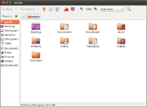

Partners
Support
Community
Ubuntu.com
Ubuntu Documentation
Official Documentation
Community Help Wiki
Official Documentation
»
Ubuntu 11.10
»
Ubuntu Desktop Guide
»
Files, folders & search

Common tasks
Browse files and folders
Copy or move files and folders
Delete files and folders
Rename a file or folder
Search for files
Sort files and folders
More topics
Browse files on a server or network share
File properties
Find a lost file
Open files with other applications
Recover a file that you deleted
Share and transfer files
Write files to a CD or DVD
File manager preferences
Removable drives and external disks
Open an application when you plug in a device
—
Automatically run applications for CDs and DVDs, cameras, audio players, and other devices and media.
Safely remove an external drive
—
Eject or unmount a USB flash drive, CD, DVD, or other device.
Backing up
Back up your important files
—
Why
,
what
,
where
and
how
of backups.
Check your backup
—
Verify your backup was successful.
Frequency of backups
—
How often and when to backup your files.
Restore a backup
—
Retrieve your files from a backup.
Where can I find the files I want to back up?
—
A list of folders where you can find documents, files and settings that you may want to back up.
Tips and questions
Edit folder bookmarks
—
Add, delete, and rename bookmarks in the file manager.
Hide a file
—
Make a file invisible, so you can't see it in the file manager.
Select files by pattern
—
Press
Ctrl
+
S
to select multiple files which have similar names.
Set file permissions
—
Control who can view and edit your files and folders.
Templates for commonly-used document types
—
Quickly create new documents from custom file templates.
What is a file with a "~" at the end of its name?
—
These are backup files. They are hidden by default.
Further Reading
More About
Files and folders
Ubuntu Desktop Guide
— Ubuntu Desktop Guide